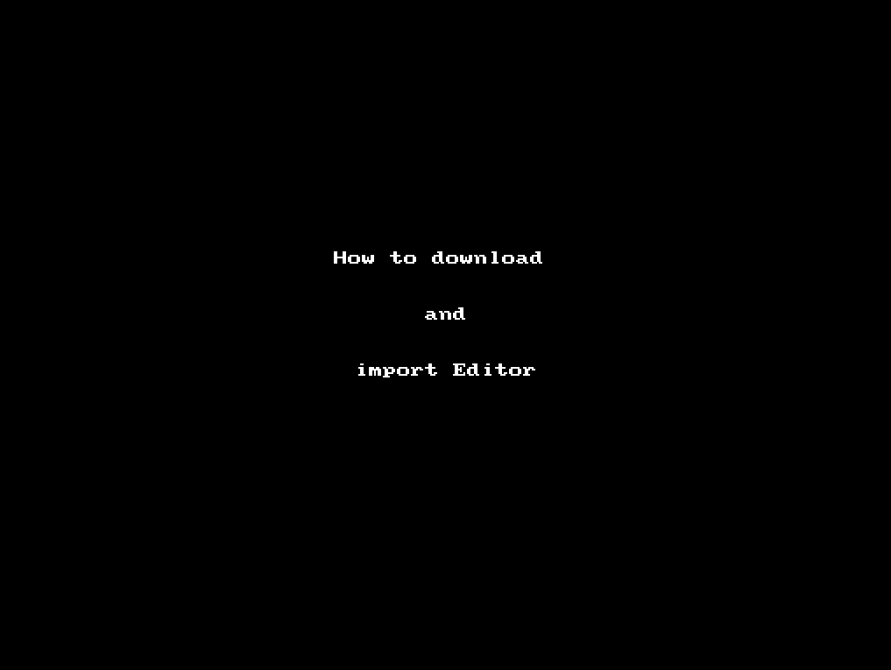

Bookmarklet Code Editor for D2L
Why you want the editor

Install Instructions
- Download the "importMe.html" file.
- Right click then click "Save link as" on the following link
importMe.html.
- Import the html file into Chrome bookmarks. See gif below for details.
- Move the bookmarklet out of the import folder and delete the folder.
- Note: You can also import the same file in to FireFox and the process is very similar.
Use Instructions
- Navigate to Brightspace page that has a code editor button
- Click on "Editor" bookmarklet icon
- Edit code
- When finished click close to close custom editor
- Then if the changes are correct, click "Save" on the Brightspace editor
- If the changes are not correct, click "Cancel" and try again
- If more changes are needed, click the bookmarklet button again before clicking save or cancle
Features
- Wrap Text
- When checked, the code in the editor will wrap
- Keyboard Shortcuts
- Click this link to be taken to a list of all the keyboard shortcuts that can be used in the editor
- Equella Location
- Click this link to be taken to Equella. Can be useful to tell others where to find the bookmarklet.
- Beautify HTML
- Click this button beautify the html again. Note that the html is always beautified when the editor is first opened for you.
- Reset Settings
- Click this button to return all settings in the settings pannel back to their defaults.
- Open Settings Panel
- Click this button to see all the options you can change for the editor. It will remember your settings from use to use.
Install & Use Gif
